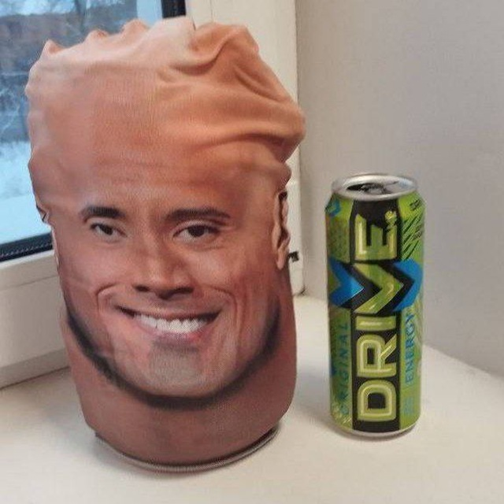

beshbarmak
@restrot
links below
// Network telemetry
Ping Benchmark
—
ms
● READY — PRESS TEST
Measures real HTTP response time to this website. This is not an ICMP ping and does not measure the connection to a friend's device.